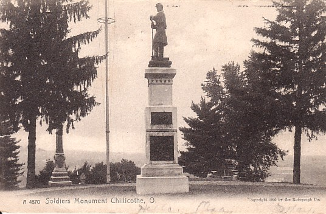

|
Click on any of the titles in the option box below to view the photo:
Grandview Cemetery is located at the south end of Brookside Avenue, about 800 feet west of Bellevue Avenue, in Chillicothe, Ohio (Scioto Township, Ross County). The coordinates are 39° 19' 28.83" N, 82° 59' 12" W.
Grandview Cemetery is enormous! It is still an active cemetery, but there are many sections of old gravestones to look at. The cemetery's name is accurate too...there is a beautiful view of Chillicothe from the top of the cemetery. I bet it's extremely beautiful in the fall.

Antique postcard, postmarked September 17, 1907
There are many well known politicians, soldiers, etc. buried in the cemetery. Here's a list of a few famous people buried in Grandview Cemetery (there are many more, I recommend looking up the cemetery on Findagrave.com):
- William Allen - 31st governor of Ohio. Also a United States senator.
- William Creighton, Jr. - Designer of the Great Seal of Ohio and Ohio's first Secretary of State.
- Edwin H. Davis - A well known scientist who gathered the largest collection of prehistoric Indian collections in the United States.
- Nathaniel Massie - Founder of Chillicothe, Ohio's first capital. He was also a Revolutionary War soldier.
- Duncan McArthur - Founder of Greenfield, Ohio and U.S. Congressman.
- Frederick H. Rehwinkel - President of the American Dental Society in 1877.
- Felix Renick - Began the importation of short-horn cattle into the west.
- Joshua W. Sill - The youngest Brigadier General in the U.S. Army.
- James Strode Swearinger - Founder of Fort Dearborn, Illinois, which later became the city of Chicago.
- Edward Tiffin - First Ohio Governor.
- George H. Tyler - One of Broadway's most famous producers in the late 19th century.
- Thomas Woodrow - Uncle of United States President Woodrow Wilson.
- Thomas Worthington - Sixth Ohio governor. Also a United States senator. Known as the "Father of the Ohio-Erie Canal".
Like most large, active cemeteries the grounds are very well taken care of. There are hardly any broken gravestones.
A huge thank you to Mike Hill for taking me to this cemetery and pointing out some of the famous gravestones!
Where do you want to go? Select your destination:
|